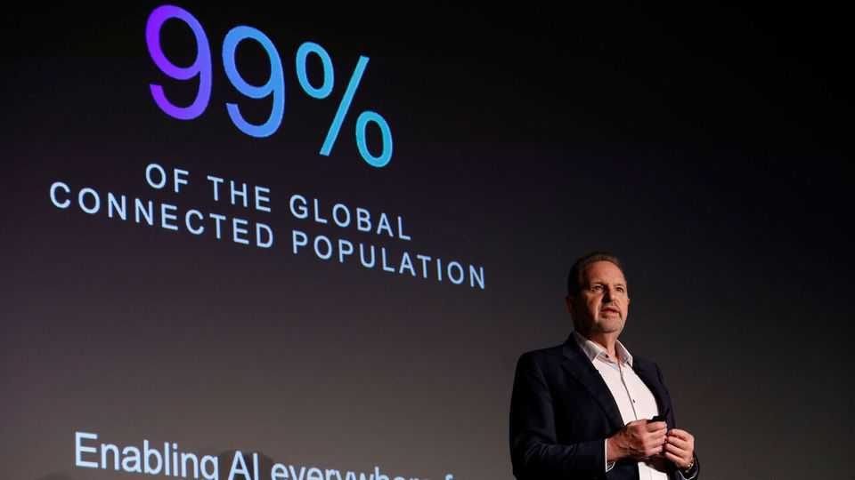
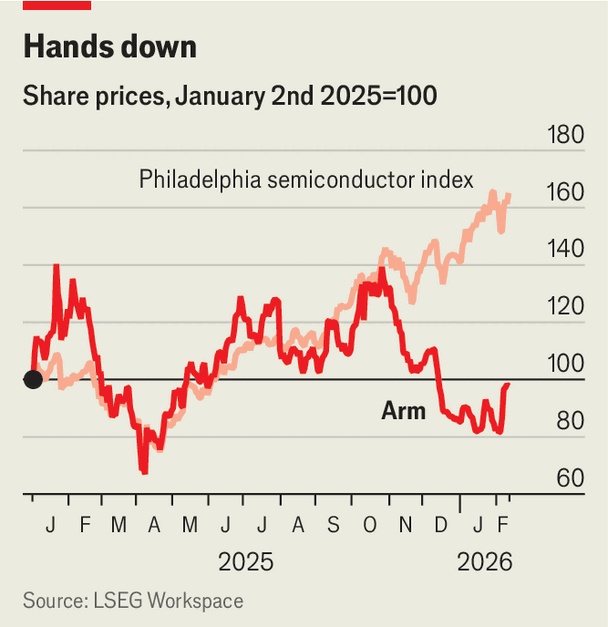

Business | Elbow grease

IN THE SEMICONDUCTOR industry, Arm is everywhere and nowhere. Designs from the British-based, American-listed, Japanese-controlled firm sit in almost all the world’s smartphones and most other connected devices. Yet Arm does not sell a single chip. Customers license its designs, tweak them if they wish and produce the chips themselves (or have them made). Arm pockets an upfront licence fee and a slim per-chip royalty. The model has made it ubiquitous. More than 300bn chips built on its designs have been shipped—over 30bn of them last year alone.

Ubiquity, however, is not thrilling investors. Weak demand for smartphones and consumer electronics has weighed on Arm’s shares: since the start of 2025 their price has declined by 2%, even as the benchmark Philadelphia semiconductor index, fuelled by enthusiasm for artificial intelligence, has climbed by 65% (see chart). Even so, Rene Haas, Arm’s boss (pictured), remains optimistic—largely because of AI. It positions the company for a new era of growth, he says, even if the payoff is not yet visible.
The AI boom should indeed rev up demand for Arm-designed chips. But it also presents the company with an awkward choice. Its licensing model spreads its designs widely, but leaves most of the value with its clients. To make the most of AI, Arm may have to move beyond selling blueprints and inch closer to developing chips of its own. That promises higher returns, but at the cost of upsetting customers who have long valued Arm precisely because it does not compete with them.
Arm’s speciality is general-purpose chips called central processing units (CPUs). Its power-efficient designs have proved especially useful in smartphones. Designing a new CPU can cost hundreds of millions of dollars and take 12-18 months. An off-the-shelf blueprint spares customers, such as Apple, much of that burden.
The data centres at the heart of the AI craze are built around graphics processing units (GPUs), the chips which power AI models. But they also need CPUs. Nvidia, the leading maker of GPUs, uses Arm designs for its CPUs, as do cloud giants such as Amazon and Google. Mr Haas argues that this is only the beginning. As AI workloads shift from training to inference, where models respond to user queries, demand for efficient, general-purpose processors should rise. Much of that work, Arm’s boss expects, will spread beyond data centres into phones, wearables and cars, again favouring CPUs.
Yet Arm’s current model captures only a sliver of the value it creates. Analysts expect revenue this fiscal year to be around $5bn, with half from royalties and the rest from licensing fees. That is up by about 20% from 2025, but still dwarfed by those of bigger chipmakers such as Nvidia, Broadcom or Intel. According to Visible Alpha, a data provider, last year Arm earned royalties of $0.86 per mobile chip, or 2.5-5% of the price.
The company is eager to extract more value. But how? To illustrate, Mr Haas uses an analogy. For most of its history, Arm sold designs for individual processors. Think of them as “Lego bricks”. Recently it has also started selling blueprints for pre-assembled blocks of processors known as “subsystems”. Bloomberg Intelligence, a research group, estimates that these bring the company three times as much revenue per chip. Arm believes that subsystems could make up over half of its royalties within a couple of years.
At some point, however, subsystems become whole toys. One option is to develop custom chips for cloud providers. That has proved lucrative for Broadcom: making bespoke chips for Google and Amazon has helped push its market value above $1.6trn (Arm is worth $135bn). Some analysts think Arm will go further and design and sell its own chips. Rumours suggest that Meta, a social-media giant, will be the first customer. Mr Haas is careful not to be drawn.
Either route would bring Arm a bigger cut from its designs, but would entail risks. Creating finished chips, or moving in that direction, would undermine the claim that it does not compete with its customers.
Arm’s ownership could affect its choices. SoftBank, the Japanese conglomerate that owns over 85% of the firm, has been assembling its own chip portfolio, buying Ampere, which makes server processors, and Graphcore, which designs AI chips. In August it bought 2% of Intel for $2bn. Masayoshi Son, SoftBank’s boss, is said to be keen to build an AI champion to rival Nvidia. Mr Haas, who sits on SoftBank’s board, talks up synergies across the group’s chip businesses. But all this may push Arm away from being a neutral supplier of designs.
Another risk is that the AI boom fizzles out. Announcements of big data-centre investments are coming thick and fast—not least from SoftBank. For now, Arm does not bake them into its forecasts, Mr Haas says, because it is unclear how many will “actually see fruition”. The big test is whether the revenues of those pouring money into AI rise fast enough to justify the spending. At some point, “the math does need to square”.
A separate concern lies in China, source of a fifth of Arm’s revenue. China’s government is promoting RISC-V, an open-source chip architecture pitched as a domestic alternative to designs from Arm and Intel. But Mr Haas says the vast software ecosystem around Arm’s chips, with millions of developers writing applications based on them, gives it a big advantage.
Mr Haas says his biggest worry is whether Arm is investing fast enough to take advantage of the AI opportunity. Chips take years to design and build; AI models evolve in months. Whether the company can move quickly enough is one question. Whether it can make the most of AI without undermining the model that put its designs everywhere is another. ■
To track the trends shaping commerce, industry and technology, sign up to “The Bottom Line”, our weekly subscriber-only newsletter on global business.